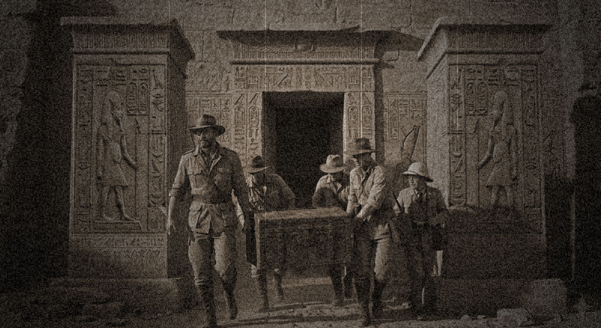
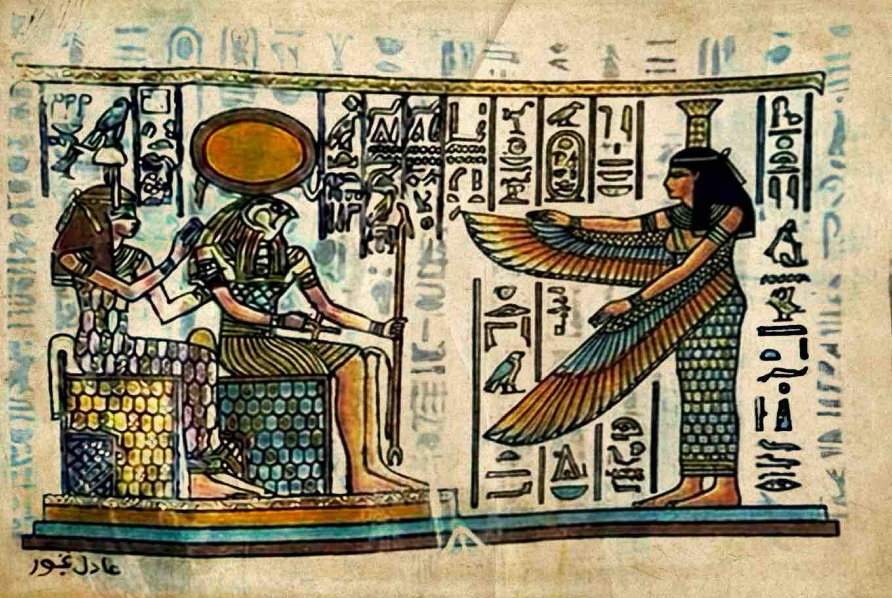

Miał to być normalny czwartek, jednakże nie dla każdego okazał się on tak zwyczajny, jak mogłoby się wydawać na pierwszy rzut oka. Życie potrafi pisać scenariusze, których nie powstydziłby się żaden hollywoodzki reżyser.
Mówi się powszechnie, że aby wygrać na loterii, trzeba najpierw zagrać. Okazuje się jednak, że nie każdy musi kupować los na totolotka, żeby w ułamku sekundy trafić przysłowiową szóstkę. Czasami przeznaczenie samo puka do naszych drzwi – a w tym konkretnym przypadku, do drzwi kajuty na promie pasażerskim.
Pan Marek z Gdyni, podczas swojej codziennej i wydawałoby się całkowicie rutynowej podróży na pokładzie statku Stena Estelle zmierzającego do szwedzkiej Karlskrony, otrzymał szansę jedną na milion, aby na zawsze zapisać się na kartach historii. Zamiast podziwiać widoki falującego morza, w jego ręce trafiła oficjalna dokumentacja o wadze międzynarodowej. Potwierdziła ona niezbicie, że Pan Marek jest jedynym i prawowitym spadkobiercą zaginionego przed dekadami, bezcennego "Skarbu z Doliny", odkrytego na terenie nekropolii tebańskiej.

Nasz informator poinformował nas, że w egipskiej przesyłce Pan Marek otrzymał namiastkę "Skarbu z Doliny". Na pewno zajmie ono wyjątkowe miejsce w kolekcji nowego właściciela - nie tylko na półce.

Warto dodać, że wraz z oficjalnymi pismami w ręce Pana Marka trafił absolutnie unikalny artefakt. Jest to oryginalny, pokryty inkrustacjami i 24-karatowym złotem papirus przedstawiający bóstwo słoneczne Ra-Horachty. Jak twierdzą eksperci z Najwyższej Rady Starożytności, przedmiot ten nie tylko potwierdza autentyczność znaleziska, ale stanowił niegdyś integralną, sakralną część oprawy strzegącej dostępu do samego skarbca.
Jakby tego było mało, emocje wokół sprawy dopiero zaczynają sięgać zenitu. Od naszego informatora z wysokich kręgów dyplomatycznych dowiedzieliśmy się, że strona egipska nadaje tej sprawie najwyższy priorytet państwowy. Z nieoficjalnych źródeł wynika, że Pan Marek otrzymał już osobiste zaproszenie od Prezydenta Egiptu.
Polak ma udać się do Kairu już na początku czerwca. Co więcej, jego wizyta ma zostać włączona w huczne obchody rocznicy prezydentury w Pałacu Al-Ittihadijja. Uroczyste przekazanie praw do skarbu ma być jednym z głównych i najbardziej spektakularnych punktów tych uroczystości, na które zjadą się media z całego świata. Wygląda na to, że dla Pana Marka ten niezwykły czwartek to dopiero początek prawdziwej przygody.